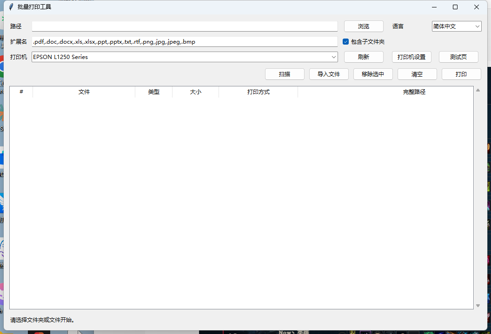

Open source · Windows · MIT licensed
Batch printing without losing the queue.
Batch Print Kit helps Windows users collect files and folders into a reviewable print queue, choose the real printer, open printer-driver settings, and print PDFs through SumatraPDF when installed.
No account required. Download the zip, unzip it, and run BatchPrintKit.exe.

Built for boring, real printing work
Review before printing
Scan folders or import files, then clean the exact queue before sending anything to the printer.
Explorer integration
Select files and folders in Windows Explorer and open them with Batch Print Kit.
Real printer selection
Choose a physical printer and avoid accidentally routing documents to WPS PDF or Microsoft Print to PDF.
Driver settings
The Printer Settings button opens the selected printer driver's own preferences page.
PDF-first backend
Use portable SumatraPDF for PDF printing when installed, reducing default-app surprises.
CLI included
Keep a dry-run command-line workflow for safer automation and repeatable batches.
How it works
Select files
Use Explorer, a folder scan, or the import button.
Review queue
Confirm every file before printing starts.
Choose printer
Pick the real device and open driver settings if needed.
Submit the batch only after explicit confirmation.
Download
Download the latest Windows release from GitHub, unzip it, and run the executable.
Build from source
git clone https://github.com/lihongyu5432-ux/BatchPrintKit.git cd BatchPrintKit python -m pip install -e . batch-print-gui